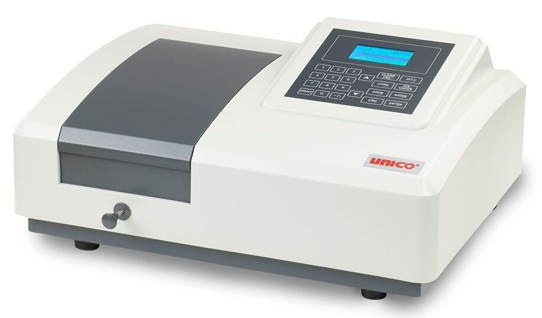

¡Bienvenido a nuestro Visor de Dispositivos de Laboratorio en RA!
Este espacio está diseñado para asegurar tu seguridad y eficiencia en el laboratorio biomédico. Aquí encontrarás recursos y directrices esenciales para utilizar correctamente los dispositivos de laboratorio. Optimiza la calidad de tus investigaciones y contribuye al progreso científico y médico.

Explora información esencial, como videos informativos y modelos 3D, para ampliar tu comprensión como ingeniero biomédico sobre los dispositivos que serán parte de tu trayectoria profesional
ELECTROCARDIOGRÁFO

Un electrocardiograma (ECG o EKG) es una prueba médica no invasiva que registra la actividad eléctrica del corazón. Utiliza electrodos colocados en la piel para medir y representar gráficamente los impulsos eléctricos generados durante cada ciclo cardíaco. El ECG es una herramienta fundamental para diagnosticar problemas cardíacos y evaluar la salud cardiovascular.
ESPECTROFOTÓMETRO
